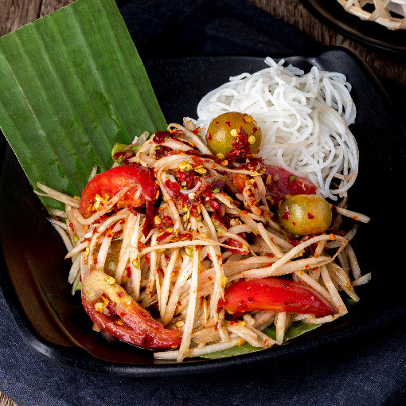

Papaya Salad Recipes

Papaya Salad Also known as 'Som Tum',
Thai Papaya Salad is a fan favourite in Thai cuisine,
and super easy to make as a weekday meal.
Ingredients Needed
- Shreded Strips Green Papaya
- Chillies
- Long Green Beane
- Limee
- Fish Sauce
- Pungent Fermented Fish Sauce
Steps
- Add chillies and long green beans
- Add limes, fish sauce, and pungent fermented fish sauce
- Mix all of them together
- Add the green papaya
- Mix again
- Done